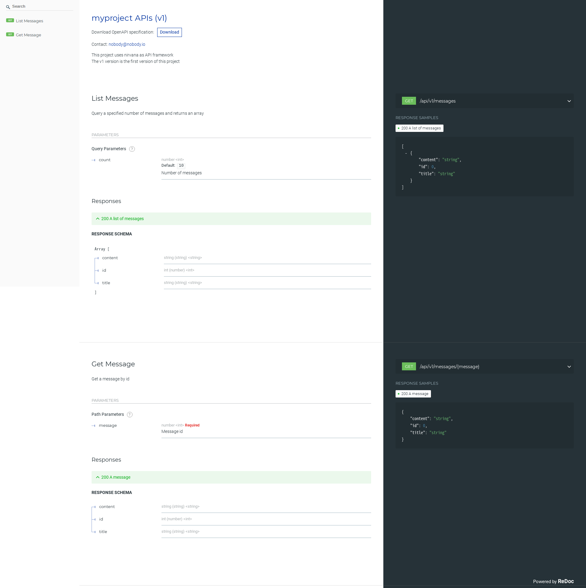

生成 API 文档
在完成了 API 的开发工作后，我们需要将 API 公开给用户使用。于是我们需要给 API 的用户提供一个文档，方便用户阅读。Nirvana 提供了一个命令用于从项目中生成文档：
$ nirvana api --serve=":8081"
默认情况下，nirvana api 会读取 pkg/apis 并使用 8080 端口提供服务。为了防止端口冲突，可以使用 --serve 设置监听的 IP 和端口。
该命令不会退出，并且会输出如下日志（项目路径和日志时间会有所不同）：
INFO 0702-15:47:52.010+08 api.go:87 | No packages are specified, defaults to pkg/apis
INFO 0702-15:47:53.499+08 api.go:95 | Project root directory is /home/go/src/myproject
INFO 0702-15:47:53.500+08 api.go:179 | Listening on 127.0.0.1:8081. Please open your browser to view api docs
这就表示文档生成成功，并且提供了一个 HTTP 服务用于访问这个文档。打开浏览器，访问 http://127.0.0.1:8081 即可查看文档。
文档截图如下： 